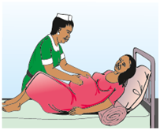

Advise her that a midwife will check for a number of issues as part of focused ANC visits. The client should ideally consult a midwife during the following times during pregnancy:
- 1st Focused ANC visit between 8-16 weeks of gestation, ideally between 8-12 weeks of gestation
- 2nd Focused ANC visit between 24-26 weeks of gestation this is the next scheduled visit
- 3rd focused ANC visit at 32 weeks of gestation
- 4th Focused ANC visit at 36 weeks of gestation
In addition, client should be counselled to return to a health facility:
- AS SOON as she has ANY danger signs
- If she has questions or concerns about her pregnancy or the baby